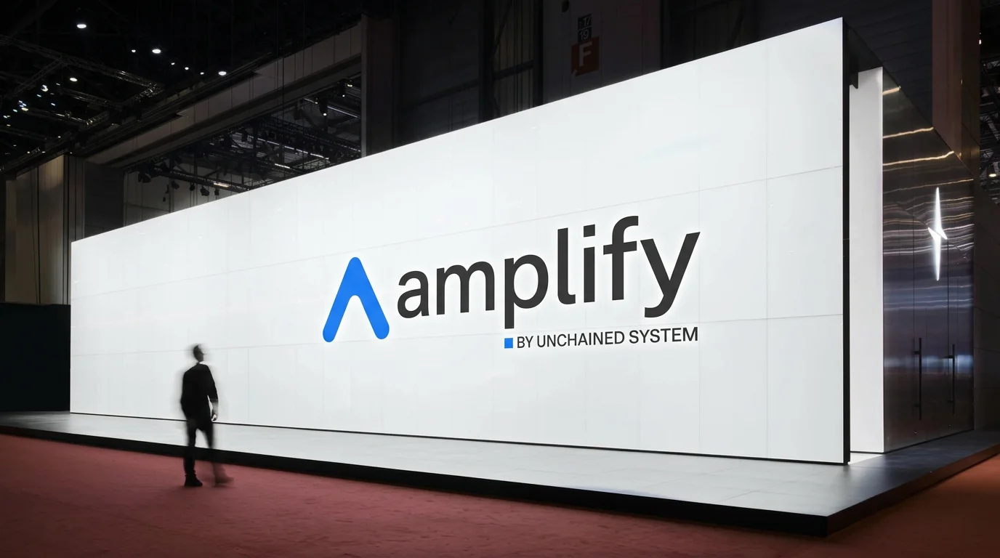
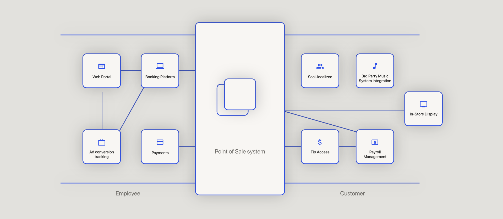
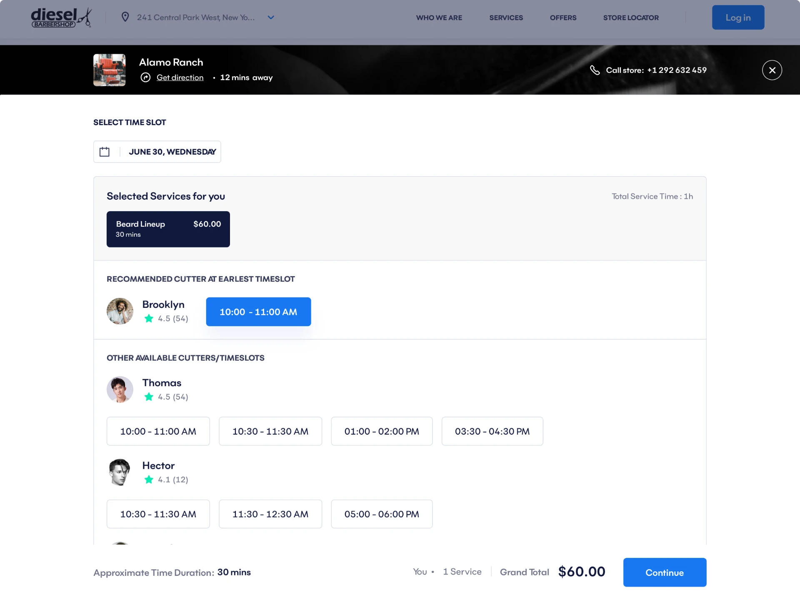
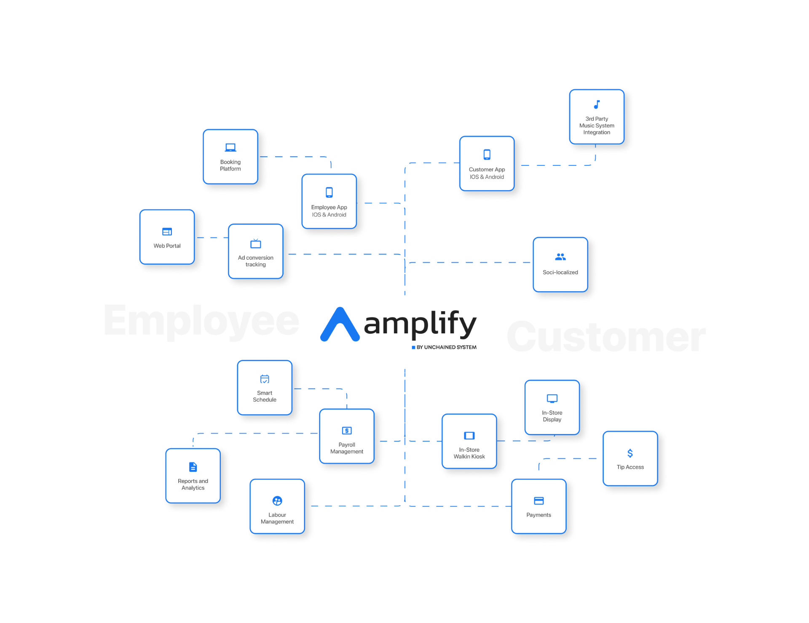
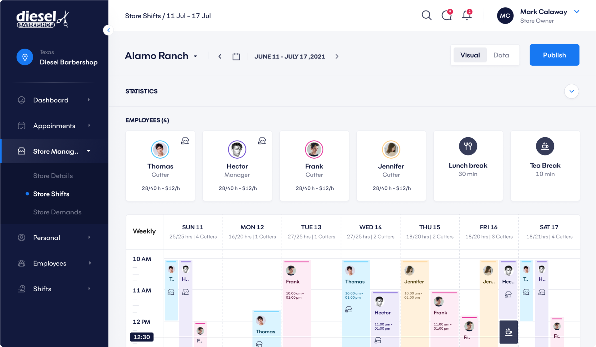
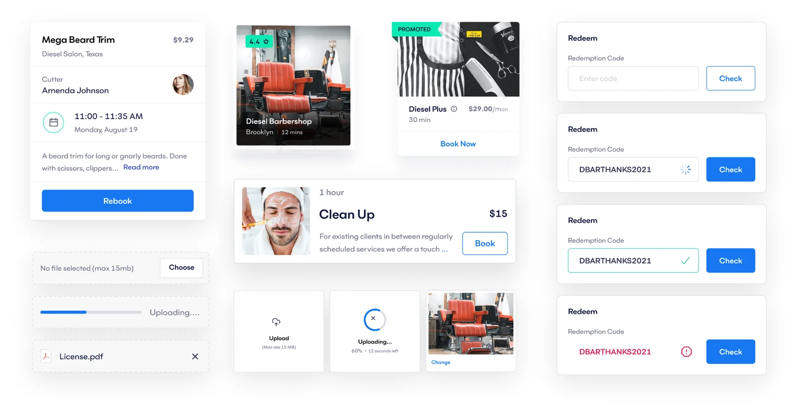

01
Date & Time
Case Study · Multi-tenant SaaS · End-to-end product design
I owned the end-to-end redesign of a US barbershop management platform — eight user roles, from franchise owner to walk-in client, living in one fragmented product. I rebuilt it from the information architecture up, so every role finally worked inside one coherent system.

01 — Overview & Mandate
Amplify promised the whole barbershop business in one platform — franchise management down to a single client booking. But it had never been designed as a system. Each role worked around the product rather than with it. The mandate wasn't to reskin screens; it was to give eight very different users one structure to work from.
The cost of fragmentation, measured
This wasn't a UI problem. It was a structural one — and it was costing shops bookings.
02 — Diagnosis
I ran discovery across owners, managers, employees, barbers, and clients to map the workflows people actually used — not the ones the product assumed. Three lenses, one question: where does the structure break?
Lens 01
Sessions with every primary role to surface pain points, workarounds, and unmet needs across booking and shop management.
Lens 02
The existing platform audited against core usability principles — surfacing redundant steps, inconsistent navigation, and no visual hierarchy.
Lens 03
Every journey mapped entry to completion — booking, scheduling, walk-ins, management — exposing the gap between intended and real behaviour.

Clients couldn't self-serve and were pushed to third-party platforms. Barbers booked on their behalf through calls and messages. The same appointment was created through three paths with no single source of truth.
Availability, service duration, and chair assignments weren't connected. Every scheduling decision needed mental arithmetic or a conversation.
No consolidated view of store demand, staff productivity, or product sales — and no way to upsell inside the workflow. Decisions ran on memory and manual tracking.
The same action lived behind different paths depending on where you were. There was no shared information architecture across roles — which is the root every other problem grew from.
03 — The Hardest Problem
Booking was the highest-traffic, highest-stakes interaction on the platform — and the most broken. Every appointment sits at the intersection of four variables that depend on each other.
The 4 Interdependent Variables
Available times depend on the barber. Available barbers depend on the service. Service duration decides which slots are valid. None of them can be chosen in isolation.
The decision
The conventional answer is a fixed wizard: pick in a set order, reload options at each step. It's easy to build — and it breaks the moment a user changes their mind, which in booking is constantly.
I designed the four variables as one connected component instead: a real-time availability matrix where any selection instantly re-resolves the other three. No reloads, no locked sequence, no dead ends.
A client can start anywhere — a favourite barber, a time that works, a service they want — and only valid combinations are shown. Impossible choices are hidden, not punished with error messages. The trade-off was more upfront logic and engineering alignment, in exchange for a flow that never makes the user do the maths.
"It took weeks to get right. The result was a booking flow that felt like it had no moving parts."

04 — The System
I rebuilt Amplify from the structure up: a single information architecture and navigation logic, with each role's interface designed as a view onto that shared system — not a separate product bolted on.

Clients get a self-serve flow reduced to its essentials — date, barber, service, slot — as one connected experience. Barbers and staff get a parallel flow for walk-ins, calls, and messages that feeds the same schedule, so there's finally one source of truth.

Each role sees what its job actually needs. Owners and managers got Store Demand — historical patterns that surface the busiest periods, so staffing becomes proactive instead of reactive.

A consistent hierarchy and predictable paths for all eight roles. The same model works whether you're a barber checking today's chair or a franchise owner comparing locations.
A component and token foundation covering the whole platform — shared grid, reusable components, defined interaction states — so new features extend the system instead of adding design debt.

05 — Impact
Validated through 18 moderated usability sessions and unmoderated testing with 200+ participants. All five tracked metrics improved — consistently, across roles.
06 — Process
Interviews across every primary role, a heuristic audit of the existing platform, and journey mapping to find where the structure broke. Personas and empathy maps aligned the team on who we were designing for.
IA first, screens second. Design workshops to explore directions, then wireframes iterated against real user tasks and interactive prototypes for booking, scheduling, and management.
Moderated sessions with real users, unmoderated testing at scale, and A/B tests on the riskiest decisions — the booking component and the navigation model. Accessibility checked before developer handoff.
07 — Principles
The old platform had plenty of screens. What it lacked was structure. Fixing the IA first made every later decision easier — and cheaper.
Every role-specific view tempts you to solve the problem locally. Design the shared system first, and let each role's interface be an expression of it.
Clients never know the booking flow runs on a real-time availability matrix. They just know it doesn't make them think. That's the job.
+22% task efficiency isn't a UX win — it's an operational one. Owners run more appointments, barbers lose less time to conflicts. Good structure has a direct line to revenue.
For founders & product teams
If different users are working around your product, features keep getting bolted on, and your core flow leaks conversions — that's a structural problem, and it's exactly what I solve. I bring end-to-end product thinking, from research and IA to a system your team can keep building on. See also the Core Systems design-system case study.